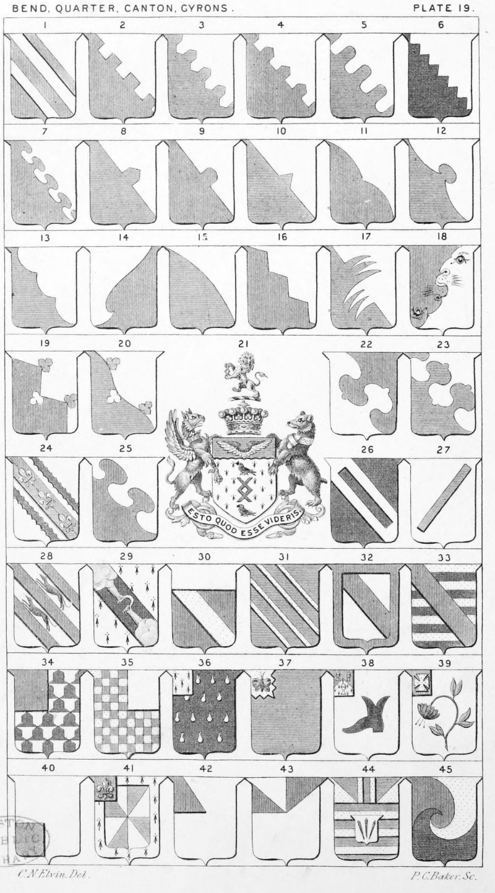

Plate 19.

Plate 19.
- Per-Bend ar. and gu. two Bendlets
counterchanged
- Per-Bend Crenelle
- Per-Bend Urdee
- Per-Bend Embattled Urdee
- Per-Bend Embattled arondie
- Per-Bend Indented
- Per-Bend Nebuly, or Nebulee
- Per-Bend In Point Urdé
- Per-Bend with one embattlement arondie
- Per-Bend In point to Sinister, or Per-Bend
Escartelee pointed
- Per-Bend Nuee, Double gored
- Per-Bend Pointed with ball
- Per-Bend Treble arched, or gored to the
sinister
- Per-Bend Sinister in Aile
- Per-Bend Arched
- Per-Bend Dancettée
- Per-Bend Two Piles, triple pointed,
bowed and counter-posed
- Per-Bend Sinister, in form of lions'
mouths
- Per-Bend Indented into three points trefoiled
- Per-Bend Waved and counter-trefoiled
- Arms of an Earl. Erm. a Fer-de-
mouline betw. two martlets in
pale sa., on a chief engrailed
az.,two marlions' wings conjoin-
ed and expanded or. Shield
surmounted by an Earl's coronet.
Crest a Lion ramp. Erminois
holding a fer-de-mouline as in
the arms. Supporters. Dexter a
griffin wings endorsed ar., gorged
with a marquiss coronet. Sinis-
ter a Bear ppr. gorged with a
belt ar. buckled and charged
with two cresents or. motto Esto
quod esse videris. Mills, Earl
Sondes
- Per Bend waved, with two foils, or
leaves, contrary posed
- Per Bend waved with foils of leaves
- On a Bend, per-bend gu. and az.
betw. two cottises engr. sa. three
fleur-de-lis or.
- Per Bend counter-pommettée
- A Bend-Braced
- A Batton, or Batune. Also termed
the Bar of bastardy
- Ar. a bentlet gu. betwn. two Greyhounds courant in bend sa.,
enclosed by as many bendlets
of the second
- Erm. on a Bend sa. two hands and
arms issuing out of clouds all
ppr. rending a horse shoe or.
- Gu. a Bend or, a chief ar.
- Az. four costs or.
- Ar. a Bend and Bordure gu.
- Barry of ten or. and sa. a Bend gu.
- Vair ar. and sa. a Quarter gu.
- Chequy or. and gu. a Sinister quarter ar.
- Sa. gutte d'Eau a Canton Erm.
- Az. on a Canton indented or, a
Butterfly of the first
- Ar. a Brogue, or Shoe sa., on a
Canton per-chev. gu. and Erm.
Three covered cups or.
- Ar. a Fritillaria meleagris stalked
and leaved ppr. on a Canton gu.
a cross pattee or.
- Ar. a Canton in dexter-base vert.
- Gyronny or Gyronne of eight ar. and
az, within a border Erm. over
all a Canton gu. changed with
a fleur-de-lis or.
- Ar. a Gyron gu.
- Ar. Two Gyrons az. also termed
Mi-Taillé. (Gyronny of six, eight,
twelve and sixteen see P. 2.)
- Az. three bars or, on an Escutcheon
ar., three nails points in base
sa., on a chief of the first two
pallets betw. as many gyrons of
the second. See P. 21. f. 42.
- Gyronny of three Arondia gu. or
and sa.